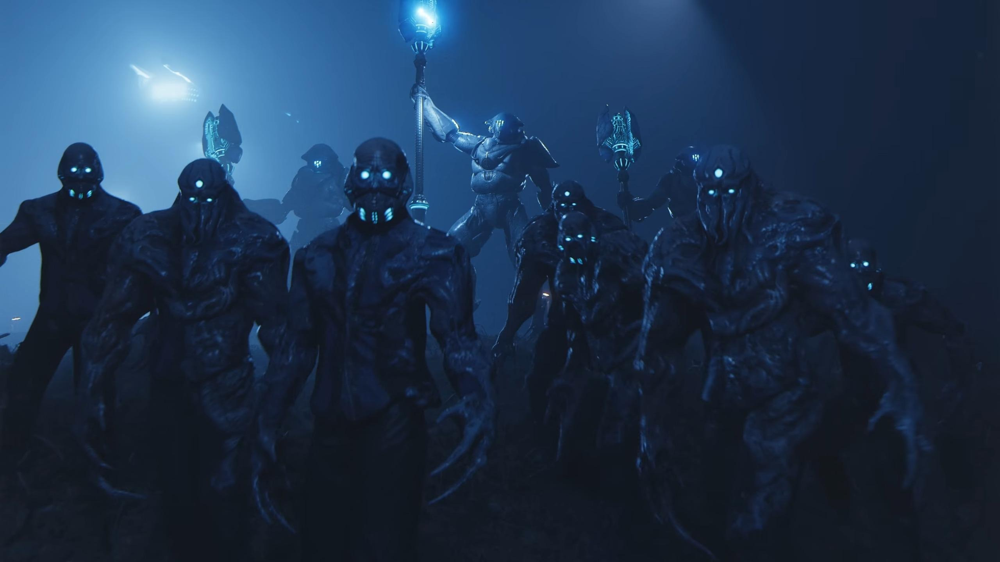
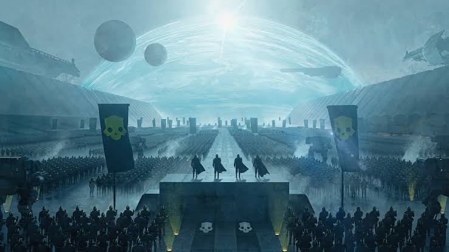
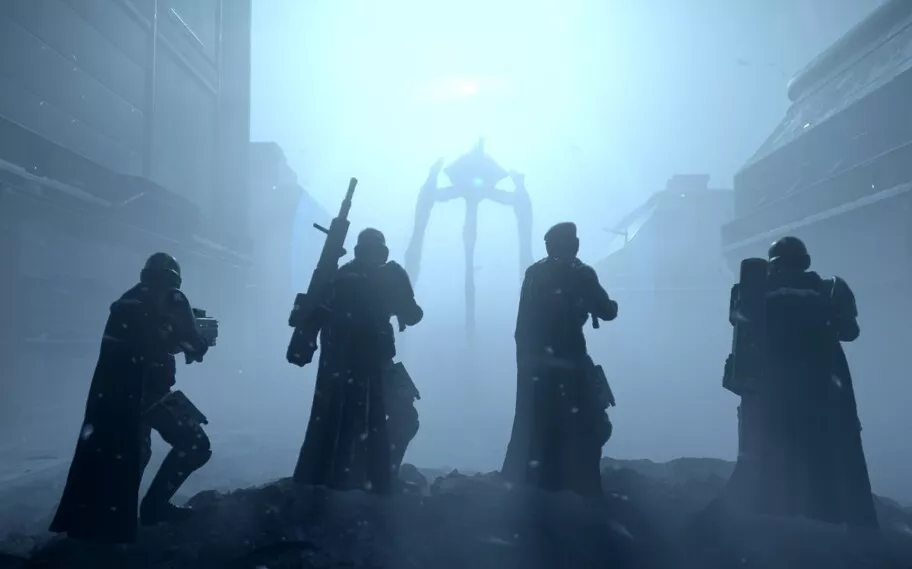
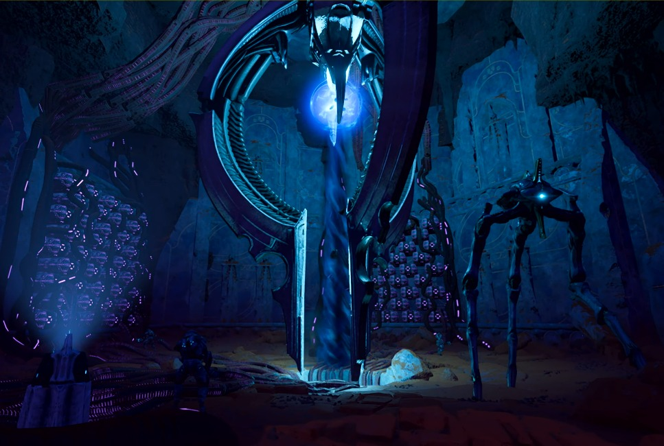
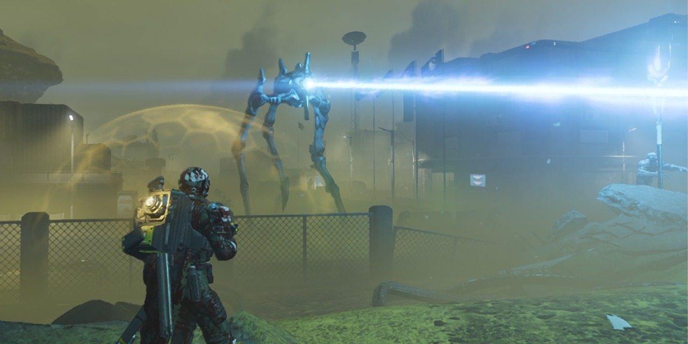
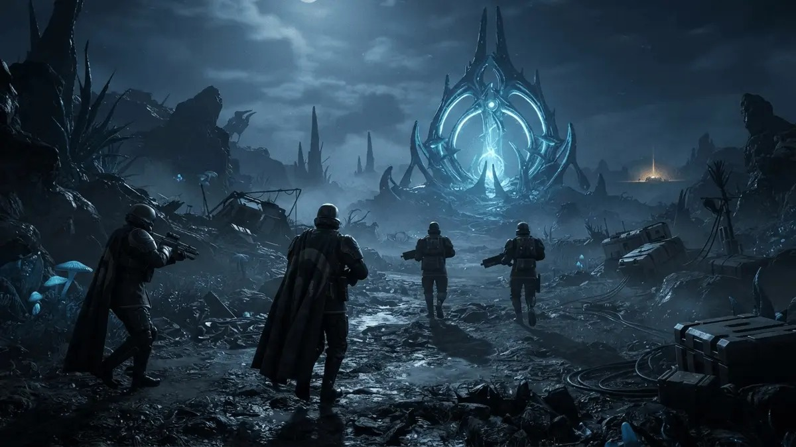
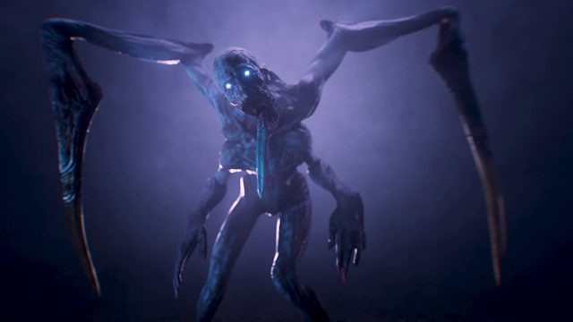
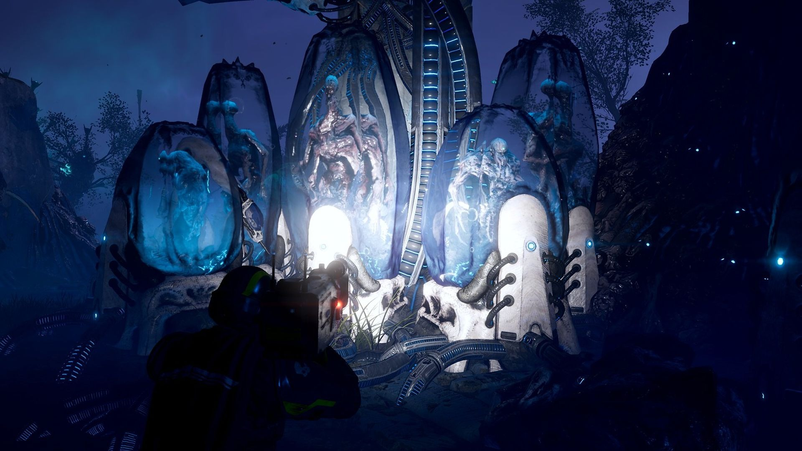
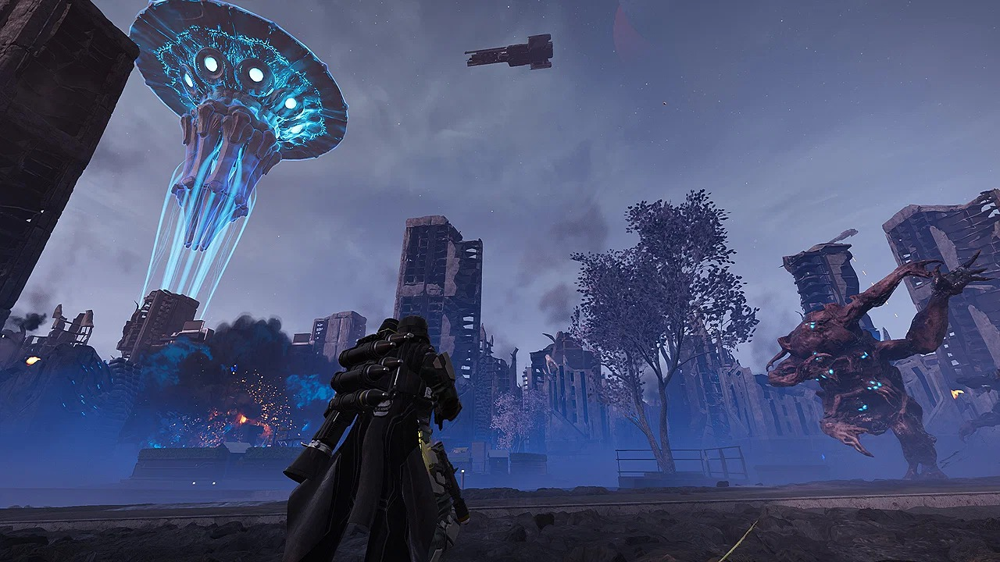
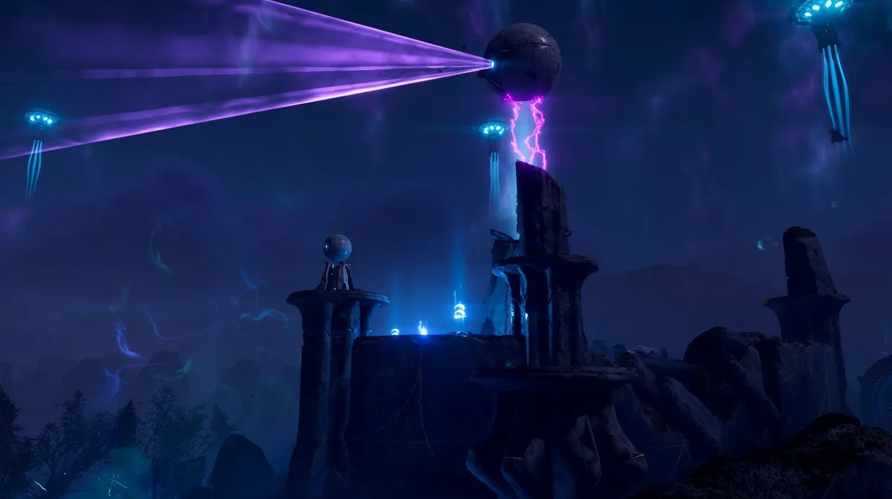

Origem
Muito antes de qualquer Helldiver nascer, os  Iluminados — ou Squ'ith, como se autodenominam — já eram uma civilização ancestral, com uma história de centenas de milhares de anos. Originalmente uma espécie aquática, evoluíram até dominar tecnologias muito além de qualquer coisa produzida por Super Terra, incluindo escudos de energia, teletransporte e armamento de plasma.
Iluminados — ou Squ'ith, como se autodenominam — já eram uma civilização ancestral, com uma história de centenas de milhares de anos. Originalmente uma espécie aquática, evoluíram até dominar tecnologias muito além de qualquer coisa produzida por Super Terra, incluindo escudos de energia, teletransporte e armamento de plasma.
Seu mundo natal, Squ'bai Shrine, era um santuário coberto de florestas e pântanos. Isolacionistas por natureza, os Iluminados preferiam manter distância do restante da galáxia — até que o contato com Super Terra transformou essa postura em guerra aberta.
Derrotados na Primeira Guerra Galáctica após a queda de Squ'bai Shrine para o S.E.A.F., os sobreviventes foram forçados a entregar sua tecnologia a Super Terra. A Federação declarou os Iluminados extintos — uma "vitória" que a propaganda repetiu por gerações.

Um Século de Silêncio
Por cerca de cem anos, a galáxia acreditou que os Iluminados haviam sido completamente exterminados. Na realidade, os sobreviventes nunca desapareceram: apenas se retiraram, reorganizando-se longe do alcance de Super Terra enquanto reconstruíam sua sociedade e sua força militar em segredo.
Esse silêncio prolongado é hoje interpretado como parte da natureza da própria espécie — uma civilização que pensa em escalas de tempo muito maiores que a humana, disposta a esperar gerações inteiras antes de agir.

O Retorno em Calypso
Em 12 de dezembro de 2184, durante a Segunda Guerra Galáctica, os Iluminados reapareceram sem aviso, atacando o planeta Calypso com uma força militar como nunca havia sido vista em nenhuma das duas Guerras Galácticas. Foi o primeiro contato direto de Super Terra com a espécie que julgava extinta.
Desde então, os Iluminados conduziram uma campanha de terror pelo setor sul da galáxia e chegaram a ameaçar a própria Super Terra, tornando-se rapidamente a maior ameaça à Democracia Gerenciada — à frente até mesmo de Autômatos e Terminídeos.

Tecnologia Além da Compreensão
Diferente do avanço bruto dos Terminídeos ou da mecanização fria dos Autômatos, os Iluminados combatem com tecnologia psiônica: escudos de energia, teletransporte de curta distância, armas de plasma e drones de reconhecimento. O resultado é um inimigo imprevisível, capaz de manipular percepção e espaço em combate.
Sua motivação declarada é a vingança pelo que consideram o genocídio de seu povo por Super Terra na Primeira Guerra Galáctica. Mas relatos do Ministério da Ciência sugerem objetivos mais amplos — possivelmente ligados ao próprio mistério do Fluido Sombrio e ao planeta Meridia, ainda sob investigação.

Forças da Invasão
O grosso das forças Iluminadas encontradas em campo se divide entre a Frota de Invasão — a subfacção oficial que sustenta a presença Iluminada nos planetas — e duas categorias de unidades que definem o estilo de combate da espécie.

Frota de Invasão
Subfacção que sustenta a presença Iluminada em planetas ocupados, permitindo que suas unidades apareçam ao lado de outras forças que normalmente não coexistiriam no mesmo campo de batalha.
Voteless
Colonos capturados nas fronteiras e transformados à força em escravos mutilados e sem vontade própria, usados como carne de canhão em ataques de massa corpo a corpo.
Overseers
Vanguarda blindada das forças de invasão. Combatentes ágeis e brutais, equipados com escudos de energia e bastões de choque, capazes de fechar distância rapidamente contra os Helldivers.
Galeria






Linha do Tempo
- Há centenas de milhares de anos A espécie Squ'ith evolui de uma origem aquática em Squ'bai Shrine até se tornar uma civilização interestelar avançada, dominando teletransporte e energia de plasma.
-
Primeira Guerra Galáctica
Squ'bai Shrine cai para o S.E.A.F. Os Iluminados são forçados a entregar sua tecnologia a Super Terra e são declarados extintos.
- Um século de silêncio Nenhum vestígio da espécie é registrado. Super Terra trata o caso como encerrado, enquanto os sobreviventes se reorganizam fora do alcance da Federação.
-
12 de dezembro de 2184
Os Iluminados retornam de forma abrupta, atacando o planeta Calypso com uma força de invasão sem precedentes.
-
2184 em diante
A campanha se espalha pelo setor sul da galáxia, chegando a ameaçar diretamente Super Terra e tornando os Iluminados a maior ameaça ativa à Democracia Gerenciada.